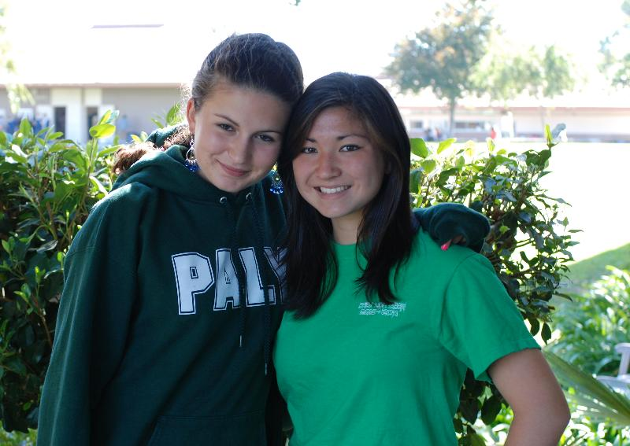

October 2010 PiE Newsletter
A profile of Paly's Link Crew, paid for by PiE donations, plus other interesting tidbits! | |
Linking to Learning:
PiE Dollars Help Upperclassmen Support Incoming High School Freshmen | |

Beginning
high school is a rite of passage that can intimidate even the bravest
incoming ninth grader. A new campus, new students, and new
routines add to the stress of the first day. To ease this
transition, last year Palo Alto High School introduced Link Crew, a
nationally organized freshman orientation program previously
adopted by Gunn High School.
Link
Crew trains schools in identifying student leaders, not only from
student government but from the general student population as well, to
participate in leadership training that will prepare them to mentor new
high school freshmen. The goal of the program is two-pronged: to
improve the freshman experience for new high school students and to
cultivate leadership among juniors and seniors.
Link
Crew at Paly, co-run by freshman guidance counselor Paige Johnson and
Choir Director Michael Najar, started with seed funding provided by the
school site council. PiE dollars given at the secondary school
level now fund this innovative program, fast becoming an
integral part of the Paly experience.
Student
leaders, recruited from all corners of the campus from the football
field to the theatre program, are encouraged to apply to become Link
Crew Leaders. Once selected, leaders attend a two-day training,
which can be supplemented by a formal leadership class that meets once a
week and offers students the opportunity to be involved in the
long-term planning of Link Crew activities.
One
week before school starts, these newly-trained leaders are assigned a
dozen freshmen each, to take them through a fun-filled day of learning
about and experiencing Paly in a friendly, high-energy
environment. The freshmen complete a campus-wide scavenger
hunt, dressed in team-specific costumes provided by their Link
leaders. As one freshman said, "My Link Leader was so awesome. We
dressed up as pirates and it made the whole day so much more fun."
And Link Leaders are also learning. One Link Leader commented, "I
really enjoyed the experience and learned a lot about leadership from
Link Crew. [At first] it was a little bit difficult to control all those
kids on my own... We had to find the balance between having them
listen to us as a leader and being one of them, which I got the hang of
by the end of the day."
Link
Crew is a unique freshman orientation experience in that it continues
the connection between students throughout the year. Link Leaders
stay in regular contact with their Link team, visiting the ninth grade
advisories to address freshmen about the ins and outs of such things as
Spirit Week and school dances. They organize tutoring around final
exams, a tailgate party at one of the football games, and they have
taken over the "shadow" program for incoming freshmen visiting campus
from private schools.
Paly administration has seen the difference that Link Crew makes.
"I have noticed in the short time that we have run Link Crew that our
student leaders are increasingly engaged in, invested in, and committed
to making the Paly experience a positive one for our freshmen," said
Assistant Principal Kim Diorio.
Palo
Alto Partners in Education (PiE) is a non-profit education foundation
dedicated to supporting all Palo Alto public schools.
|
| Quick Links |
For any other information, including volunteering opportunities, please call 650.329.3990 or e-mail info@papie.org |
|
|
|
|
Corporate Matching Gifts = FREE MONEY FOR PiE!
| |
Thanks
to the generosity of employers in our community, PiE received more than
$200,000 in matching funds last year. Many employers, including
Google, Cisco, Yahoo, Microsoft, Intuit and more, offer programs that
can double, or even triple, your charitable contributions. Use our
searchable database to see if your company offers a matching gift
program: Click here. Many businesses have an easy, online process in place. However, please contact the PiE office at: donations@papie.org or 650-329-3990, if you need assistance. We're always happy to help!
|
| Check Us Out Online! | |

Follow
PiE on Facebook to hear about upcoming Challenge Grants, read current
PiE news find out how to Honor Your Teacher (in the spring), and more!
www.papie.org
|
|
|